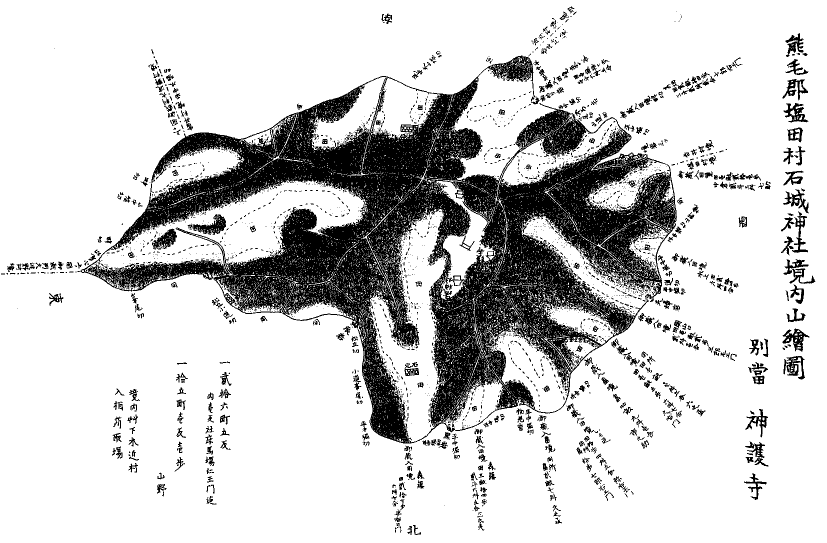
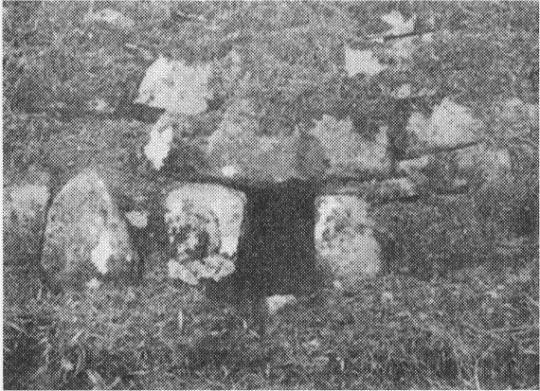
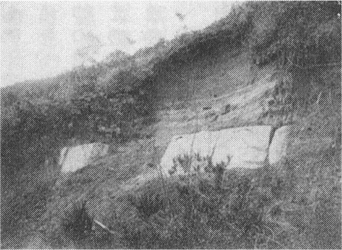
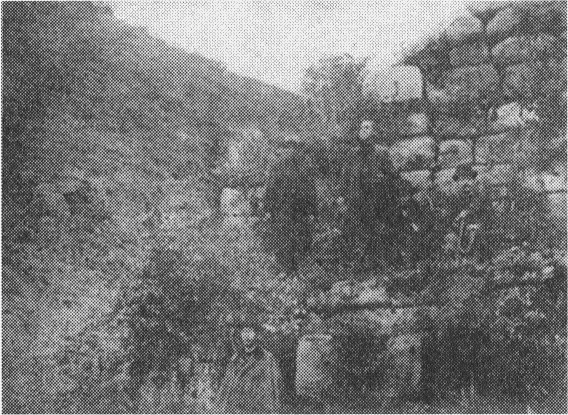
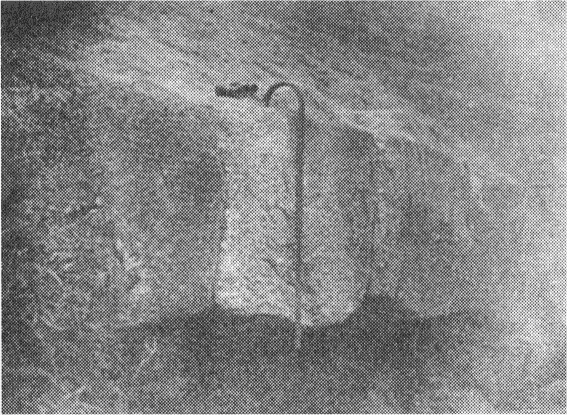

| 周防石城山神籠石探検記 | |
| 喜田 貞吉 | |
| (2012) | |
周防石城山神籠石探検記
喜田貞吉
明治四十二年十二月三十日、世間では年末だ師走だと餅搗きやら懸取りやらに忙しく騒いでいる中を東京帝国大学の嘱によって石城山
神籠石
探検の為に登山した。同行者は日本歴史地理学会出張員藤井、宮崎の両文学士と芦田伊人氏とで、別に、九州における熱心家にその人ありと知られたる小倉中学校長文学士伊東尾四郎君は、わざわざその任地から来会され、遺蹟報告者熊毛郡視学西原為吉君をはじめ、有志の人々六七名、また案内かたがたともに登山せられた。
石城山の神籠石は、この種の遺蹟が本州にも存在していることを始めて証拠立てたもので、神籠石研究上に一つの記念となすべきものである。
余輩が今回さらに神籠石について研究を重ね、これを世間に吹聴し、遂にこの「神籠石号」を発行するまでに至った動機は、前記西原君によってこの遺蹟が発見された事であった。西原君は福岡県の人で、神籠石についてはかねて熟知されている。先年余が筑後女山
の遺蹟を調査した際にも、同君は親しく案内の労を執られた。その西原君が当郡の視学として転任されたのは、多年埋没して世に忘れられていた当山の大遺蹟が、いよいよ世に出るべき機運を造ったものだ。
石城山には延喜式内石城
神社がある。今は郷社の社格であるので、郡視学たる西原君は郡長に代り奉幣使として当神社祭典の際に参向した。当山にはかねて山姥の穴として知られた四つの穴がある。西原奉幣使は登山の為にこの穴を実見し、その形式の女山の水門に酷似している点に注目され、これを連絡すべき列石を捜索された。果然或いは埋没し或いは崩壊しながらも、なお明らかにそれと認むべき証蹟を発見し、すなわち余にあてて山内古図とともに報告されたのがすなわち余らの今回の探検となった道筋である。
山陽鉄道田布施駅から西北に進むこと二十余町にして早くも麓に達した。山は海抜三百五十二メートル、さして高いと云えぬながらも、群小諸山の間に嶄然
頭角を現わしている。南口より上り、石城神社の楼門を見、妙見宮のほとりに至れば、そこには県会議員難波作之進君、当社社司石原堅磐君、塩田村長田中邦五郎君、同村小学校長石川健輔君はじめ、有志の方々十余名一行を待ち合され、湯を沸かして登山の労を慰せられた。ここにおいて同勢約三十名、石原社司の嚮導で周ねく山中の遺蹟を巡覧した。西原君の発見以来有志家の登山もあり、石原社司の調査もあって、かねて知られたる四つの穴以外、各所に列石の存在やら、クツ石と俗称する種々の工みを施した大石やらを方々で発見されたのである。説明を聞きつつこれを見るに、穴はすなわち女山
式の水抜き穴で、これを連絡している筈の列石の明らかに点綴さるるところ、疑いもない神籠石だ。そもそも当山における神籠石の遺蹟は［＃「遺蹟は」は底本では「遣蹟は」］
、古人は既に熟知していたものと見えて、元禄十年の撰にかかる石城神社の縁起には、明らかに、
当山は高天に聳え諸方に秀でて、虚空に高し。八方に磐石を畳み
、四方に四窟を構へたる神仙の奇山なり
。
と書いてある。ここに四方に四窟を構えたとあるのは言うまでもなく四個の穴で、八方に磐石を畳んだとあるのはこれを連絡した列石の存在を知っていたからの記事だ。ところが、その後いつの程にかその列石は或いは崩れ或いは埋まって、全く世に忘れられた。世人の知っているのはただ四個の穴だけで、これを山姥ノ穴と云っているのである。石城神社所伝の古図にも、所謂四窟は立派に書きあらわしてあるが、磐石を畳んだ形跡は見えない。この図は縮写して本誌に挿入しておいた通りで、すなわち山上には延喜式内に列せられた石城神社があり、別当神護寺がその西南に並び、所謂山姥ノ穴は、山の北面に二つ、南面に一つ、東面に一つを記載してあるのである。すでに延喜式に社名を石城とある以上、この遺蹟が後世のものでない事は明らかである。
発見者郡視学西原為吉君の報告によると、
古来山姥此の穴に住し、諸器物の所蔵豊かなりしかば、石城神社祭典の際には、毎歳祭典の器具を山姥より借り受くるを例としたり。而して之を借り受くるには、紙片に借り受けたき器具名個数等を記し置けば、穴の外に出しあり。之を返済する時も、穴の傍まで持ち行くを例とせしが、或る時借り受けし器物を破損し、其のまゝ返し置きたる為、山姥の怒を招きけん、其の翌歳より貸し渡さざるに至れり云々との伝説あり。
とある。かかる俗伝は斎瓮
土器等を蔵する塚穴につきて往々存するもので、本誌にも掲載してある報告中に鳥取県にも同一の伝説を伝えた場所のあることを述べている。余が郷里阿波国などにも家具の窟と云って、客のあった時に家具を借りに行っておったと唱える塚がある。ここの山姥の穴は、土器を有する塚穴に関する伝説が、同じく穴と云うところからこれに遷ったものとみえる。
遺蹟現在の状態は、右の西原氏の報告に、
穴は福岡県の分よりも小さく、左右の石垣も其の石材も比較的小に有之候。此の地の人は単に四穴のみを知り、其の左右に連続せる石垣には注意致し居り不申候。察するに女山の神籠石の如く、穴と穴とを築石にて必ず連続せしものなるべく候。若し果して事実なりしと仮定せば、優にその線は一里半乃至二里位可有之被存候。
とある。また、その後の報告には、
水門の形状雷山、女山のと同形なれど、上下左右の石垣は石材彼の如く偉大ならず。水門の左右なる石垣は、谷ならざるに従ひて漸次低下し、石質は一定し居らざるが如し。此の地に産するもの、石の寸法又一定し居らず。大小交り居れり。
穴は先の方稍高くして、人の立ち得られんとする位あり。先年試みに此の穴中に蚕卵紙を蓄蔵したりと云ふ。
とある。以てその大要を知ることが出来よう。なお特にこの遺蹟について注意すべきは、すでに神籠石概論の中にも述べておいた別当神護寺のことだ。神護寺と云う名の寺は山城の高雄山にもあって、寺として珍らしいものでは無いが、雷山にかつて神護院があって、境内に香合石のあることを思うと、ここの石城山神護寺も、もとは「コウゴジ」と読んで、所謂石城たる神籠石を山号寺号に因んだものかもしれない。

Ⅸ周防石城山神籠石周辺地図
神護寺は維新前に一度第二奇兵隊の拠るところとなった。その後神仏分離の際に他に移され、後に大野村の松蓮寺と合併してその寺を神護寺と呼ぶこととなった。今も寺名だけは存しているが、もとの寺は全く廃れて、空しく奇兵隊の紀念地として寺地は存している。
石原社司の案内で第一番に見たのは東面の穴だ。便宜これを第一の穴と名づけ、順次右へ廻って第二、第三、第四と数えようと思う。
第一の穴は山の半腹のやや谷をなした所の石壁にある。石壁は十分に彫琢を加えざる切石割石を煉瓦形に積み重ねて谷を横ぎり、その内部は全く土を以て谷を埋め平坦にしてある。石壁の高さ約一丈五尺、横十二三間に及び、その左右にも石を数個重ねた石垣が翼をなして、すべて百間近くに及んでいる。
穴は石壁の下部にあって、その口において高さ一尺二寸横一尺六寸、僅かに匍匐して入る程だが、十間余も入れば小児ならば僅かに身を屈すれば立って歩むに足る程の高さになるという。西原君報告の蚕卵紙を貯えたとあるのはこの穴だ。同行の村民の中に田村卯之助という人があった、この人かつて穴の奥を極めんとて這い込んだが、遂に目的を達しなかったという。
この穴から右へ行く内に列石の見事に露
れたのがあった。口絵に挿入してあるのは別の所のであるが、形においては同様だ。石の高さは二尺余、奥行七八寸。女山などのと比して大差はないが、当山のは九州でかつて見ざる並べ方をしてある。すなわち、九州のはいずれも正面を水平面に垂直にしてあるが、ここのは斜めにしてあること写真の示す通りだ。これを見ていよいよ城廓の一部だなどいう説の成立せざることは明らかにされたと思う。

Ⅸ石城山神籠石（山姥の穴）

Ⅸ石城山神籠石列石の一部

Ⅸ御所ヶ谷石門の一部

Ⅸ御所ヶ谷神籠石列石の一部
なお進んで所謂クツ石を見た。横六尺、縦三尺、それにいろいろの工みを施した花崗岩だ。後に石原社司の報告によれば、他でも二個新たに発見したそうである。これも研究すべきものだ。石は山腹のやや低く谷をなしている所に横たわっている。思うに、この辺もかつて石壁などの設けがあったのが、後に埋まりでもしたものであろう。
辰石（地図参照）のほとりを過ぎて、第二の穴へ出た。石壁の上下ともに水田となっている。石壁はやや角度をなした左右の二翼よりなり、左翼中央の下部に穴は開いている。左右翼の間には今は細渓川が流れているが、かつては御所が谷の石門の如く、ここから列石の境界中に入る様に出来ていたのかもしれない。大体当山ではもとこの方が正面であった様だ。
第二の穴は深さ百六十八尋以上だという。これは例の田村卯之助という人が、今より二十余年前まだ本人が尋常四年生であった時に、時の校長兼安光次郎という人から促されて、谷光蔵という同じく向う見ずの子供と二人で這い込んだ実験談によって知ったのだ。二人は手に蠟燭を持ち腰に縄を付けて這い込んだとの事である。この校長の事は同行の他の人々も熟知の事で、しかも這い込んだ本人自らの平素を知っている衆人環視の中での言であるからすこぶる価値ある証言に相違ない。その言によると、二百尋用意した縄が百六十八尋まで這い込んだ時に蠟燭が消え、その上蝙蝠が頻りに面部を打つので、さすがの向う見ずも恐ろしくなって這い出したとの事である。つまり奥を極めなかったので、この穴が百六十八尋以上の深さであることだけがこれで証明されたのだ。本誌に挿入してある写真は、この穴の入口を示したものである。
第三の穴は六十余年前の崖崩れの為に埋まったそうで、今はその入口を見る事が出来ぬが、やはり山腹のやや低くなった場所にあって、ここのは石垣が三段になっている。上段が高さ約三尺、中段と下段とが各約九尺。その上は平地をなして、もと大段坊
という僧坊があったとの事だ。もと当山別当神護寺の盛んであった頃には、山内に三十六坊あったと云う。現に寺址と思われるものも多く、そして大段坊の外にも円戒坊、十善坊など云う名も伝わっている。また、御所ヶ谷において見るが如き礎石の、列を正して今もなお四個ばかり残っているのもある。明らかに何かの建築物のあった蹟だ。口碑には、その石の下に朱を埋めてあるというが、思うに、古塚などから転じて来た伝説であろう。
第四の穴はその下方を築き上げて水田を作った為に埋もれて、今は石壁の上部を見る事が出来るばかりである。
石城山や女山の水抜き穴とも云うべき水口が、水の入口がなくてしかも甚だ奥深いことは、特別の解釈を要することであろうと思われる。これが谷に跨った石堤ではなく、正面のみ高い石垣に築き立ててその上は平地に作り成し、今では水田になっているのすらあるくらいであることを考えると、神籠石が谷に亘った時に、その谷が雷山の様な深い場合にはやむをえず墻壁を跨らせてこれに水樋を設けるのであるが、この山や女山の如く、さまで深くない場合には、正面を高く築き上げてその奥は埋めてしまい、神籠石の域内はなるべく平らにして、水抜きの用として水口を設けたのかと思われる。それにしては切石で厳重に組み立てた百六十八尋以上の水道が、あまり仰山らしくも思われるが、或いは何か迷信の伴っていたものかもしれない。
石城山の神籠石について注意すべき最も面白いことは、その石の並んでいる線と、石城神社の旧境内とがほぼ一致しているらしいことだ。石城神社には中世以後時々神領の寄附があって、境内がだんだん増してはいるが、なお往々本誌巻頭挿入の神護寺旧領地図の境界線と神籠石の線とが一致している。神護寺の領地はすなわち石城神社の旧領地で、それは旧境内と、後に寄附を受けた水田山林等とだ。思うに神籠石の境界以外にある領地は後に増したもので、神籠石がすなわち旧境内の境界なる列石であったものであろう。してみれば、石城神社の旧境内はすなわちその神の神奈備で、神籠石が神奈備の境界石であったろうとの事実は、この石城山の実際と古地図古文書との対照によって、ますます明らかに証明せられるのである。
石城山の神籠石が果して石城神社神奈備の境界であるとすれば、次に出て来る問題は石城神社の祭神だ。この地方は、もと周防の郷で、周防国造本拠の地であった。されば、その地方に秀でている石城山上のこの遺蹟はすなわち国造祖先の神奈備で、石城神社はすなわち国造の祖神天津彦根神を祀ったものと解すべきが至当であろう。既に故栗田博士もその神祇志料に石城の神を天津彦根神だと書かれた。しかるに、社伝では大山祇神に雷神、高靇神
を配祀したのだとあるそうだ。思うにこれは後世の誤りで、後世祈雨の神となったが為に、かく伝うるに至ったものであろう。かような事は他にも例が多い。
石城神社に参拝して特別保護建造物たる社殿や木鉾、高麗狗、曲玉、石斧などの神宝・蔵品を一覧し、同行の有志に神籠石に関する卑見を演説して、田布施まで出たのは夕暮であった。ここで夕食をすませ、翌日の行程を便にする為に夜行で三田尻まで行った。旅館に尻を落ちつけたのはかれこれ十時であった。
当日同行者の一人柳川文吉氏詩あり。
懐炉扶病壮心摧 踏破霜威幾崔嵬
千里検来千古跡 山神応是春風開
右従行喜田博士探検隊一行垂教有感賦以呈乞叱正
というのだ。お粥腹を懐炉で助けつつ寒中を登山した記念としてここに掲げておく。
底本：「先住民と差別 喜田貞吉歴史民俗学傑作選」河出書房新社
２００８（平成20
）年1
月30
日初版発行
初出：「歴史地理 第一五巻第三号」
１９１０（明治43
）年3
月号
※表題は底本では、「周防石城山
神籠石
探検記」となっています。
入力：川山隆
校正：門田裕志
２０１１年8
月7
日作成
２０１２年5
月16
日修正
青空文庫作成ファイル：
このファイルは、インターネットの図書館、青空文庫（http://www.aozora.gr.jp/）で作られました。入力、校正、制作にあたったのは、ボランティアの皆さんです。